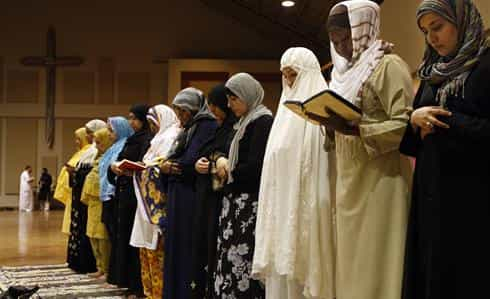

is an aspiring philosopher king, living the dream, travelling the world, hoarding FRNs and ignoring Americunts. He is a European at heart, lover of Latinas, and currently residing in the USA.


Continuing the series on conservative religions, our second part takes us to the always controversial Muslim faith.
I attended an “open night” at a local Muslim worship center during their holy period of Ramadan. I have not attended a regular religious service here, and have no desire to be added to any more government watchlists than I am already on, but will share my Ramadan experience.

Muslim men and women worship separately. I was surprised at what a huge difference this made in the worship. I will casually ogle most women in a public setting. Even if I see a happily married, conservatively dressed woman in a formal setting, my biology compels me to examine her body visually. In Islam, the women are behind you in a different room, and when they are seen, their bodies are completely covered except the face. This is a highly effective manner of removing sexual thoughts from the mind, and allows one to focus on worship. It makes me consider the idea of separate sex schooling in a positive light.
Muslims believe Jesus was a prophet of God, and honor and respect him, but don’t believe he was the one and only Son of God. They believe he was another prophet, along with Abraham, Moses, etc. They believe in strong patriarchy and women are not given any visible roles in the church, and they are expected to always respect and be subservient to their father, husband, or brothers.
While the basic faith itself is somewhat similar to other Abrahamic religions, Muslims have practices which I found extremely time consuming and difficult to integrate into modern life. The purpose of existence is to worship God, and one is expected to do so throughout the day. One must face the direction of Mecca, Saudi Arabia, prostrate oneself, and pray 5 times every day. Alcohol and pork are prohibited. Male genitals are circumsized.
There are some interesting economic ideas, such as prohibition of usury (earning interest without being exposed to the risk of the investment) and taxation of wealth (which is rarely taxed in the west) but not trade (which is highly regulated and taxed in the west). Hoarding for speculation is prohibited. Polygamy is allowed with a maximum of 4 wives.
The right hand is given priority (which seems a bit unfair to lefties). There is a ritual of handwashing that must be done in a certain order, and special rules for using the bathroom that seem to foster obsessive compulsive disorder. One must enter the toilet area with the left foot first, then remain silent. Use only the left hand to touch the genitals, wipe and wash the penis or anus (using an odd number of wipes only), say a small prayer for relief of the filth and exit with the right foot first. Oh and make sure one’s genitals are not facing Mecca.
To wash, which must be done before each of the 5 prayers, as well as after going #1 or #2, passing gas, getting a cut, sleeping, touching the opposite sex, or touching a dog’s saliva, one first washes the left hand, then the right, then the face. While there are strong hygienic reasons for this behavior, I can’t imagine living that way, and much of it in modern society is unnecessary, although I like the idea of never shaking hands with something that has touched an anus or penis.
Indeed, so OCD are the rules that there are actual scriptures regulating this behavior.
However, Muslims take the virginity of their women so seriously that the daughters can face threat of death for committing premarital sex. The patriarch has unquestionable authority. Women are to dress conservatively, and promiscuous behavior is harshly and rapidly shunned by both male and female Muslims. Likewise, homosexuality is brutally repressed.

Washed with his right hand first
In Saudi Arabia, there is a government agency charged with preventing degeneracy and promoting the sacred, called the Committee for Preservation of Virtue And Prevention Of Vice
While I could accept a Muslim wife, I cannot see integrating this religion into my lifestyle. There are some good ideas in the religion, and it is perhaps the only remaining bastion of patriarchy in the world today, but it focuses a little too much on the men.
The religion requires odd and outdated rituals, which to some degree, are a part of any system of control, but in this case are excessive. Some of the practices one would either need to ignore, thereby being a bad follower, or publicly reveal, which would subject one to ridicule and suspicion. If you are living in the west, I would think a conservative sect of one of the other Abrahamic religions would be a better fit.
Read Next: ROK Undercover: What It Was Like To Spend A Day At A Mormon Church